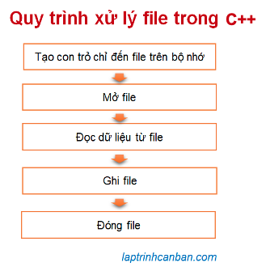

Cùng tìm hiểu về cách xử lý file trong C++. Bạn sẽ học được khái niệm file trong C++ là gì, quy trình xử lý file trong C++, cũng như cách xử lý lỗi mở file trong C++ sau bài học này.
File trong C++ là gì
Trong thế giới máy tính, file là một loại “Tài liệu” nhằm lưu dữ dữ liệu và thông tin. Có rất nhiều kiểu file khác nhau nhằm lưu dữ các kiểu dữ liệu và thông tin khác nhau, ví dụ như file text, file Excel, file Json, file XML, hay là file CSV v.v…
Để có thể thao tác với các loại file này, người dùng thông thường cần các phần mềm chuyên dùng để mở, đọc ghi và lưu chúng. Tuy nhiên thì với các lập trình viên như chúng ta thì bằng cách sử dụng sử dụng ngôn ngữ C++, chúng ta cũng có thể dễ dàng thực hiện các thao tác tương tự với file như vậy.
Cũng giống như mảng, chuỗi hay biến thì file trong C++ là một loại dữ liệu trong chương trình, và một file khi nhập vào chương trình cũng sẽ được lưu giữ tại một vùng nào đó trên bộ nhớ máy tính. Tuy nhiên khác với các loại dữ liệu khác có thể gán vào một biến để xử lý, thì để thao tác với file, chúng ta cần tạo ra một thực thể của kiểu cấu trúc FILE để chứa thông tin của file cần thao tác, sau đó sử dụng tới một con trỏ để chỉ đến vị trí của thực thể FILE chứa thông tin file đó trên bộ nhớ, qua đó thực hiện các thao tác với file thông qua các hàm có sẵn, với các chức năng cụ thể như đóng, mở, ghi hay lưu file.
Do vậy muốn thao tác được với file, bạn cần nắm vững các kiến thức cơ bản về con trỏ và kiểu cấu trúc trong C++. Bạn có thể tham khảo các bài viết chi tiết về con trỏ trong chuyên đề Con trỏ trong C++, cũng như về kiểu cấu trúc tại chuyên đề Kiểu cấu trúc trong C++.
Xử lý file trong C++
Tương tự như với ngôn ngữ C thì quy trình xử lý file trong C++ sẽ gồm các bước như sau:

Tạo con trỏ file
Mỗi file trong chương trình C++ được xử lý dưới dạng một thực thể của kiểu cấu trúc FILE - một kiểu cấu trúc được quy định sẵn trong ngôn ngữ C++ phục vụ cho việc xử lý file.
Về căn bản thì cách sử dụng kiểu cấu trúc này cũng tương tự như các kiểu cấu trúc mà chúng ta đã học trong chuyên đề Kiểu cấu trúc trong C++.
Để thao tác với file, trước tiên chúng ta cần phải tạo một con trỏ chỉ đến thực thể của kiểu cấu trúc FILE chứa thông tin của file đó trên bộ nhớ với cú pháp sau đây:
FILE *fp;
Sau đó, bằng cách truy cập vào địa chỉ này thông qua con trỏ, chúng ta mới có thể thực hiện các thao tác với file.
Mở file
Thông thường khi mở file trong máy tính, chúng ta có thể click đúp chuột vào nó, hoặc là mở nó trong một chương trình đặc định. Tuy nhiên khi mở file trong chương trình C++, chúng ta cần phải sử dụng tới một số hàm chuyên dụng như fopen() hay fopen_s().
Việc mở file và gán địa chỉ file vào con trỏ thường được tiến hành đồng thời. Ví dụ bạn có thể mở một file sample.txt bằng hàm fopen() và gán vào con trỏ file fp như sau:
fp = fopen("sample.txt", "r"); |
Chi tiết về cách mở file trong C++ hãy xem tại bài:
- Xem thêm: Mở file trong C++
Đọc dữ liệu từ file
Sau khi mở file, chúng ta đã có thể đọc các dữ liệu từ file vào trong chương trình để xử lý.
Có nhiều phương pháp để đọc dữ liệu từ một file. Ví dụ bạn có thể đọc từng dòng của file, hoặc đọc toàn bộ nội dung file. Nội dung file có thể được đọc dưới dạng từng ký tự, dạng chuỗi, hoặc dưới dạng mảng để có thể dễ dàng xử lý trong chương trình.
Để đọc file trong C++, chúng ta có thể sử dụng các hàm kế thừa từ C như là fgets() hay fgetc() chẳng hạn.
Ngoài ra với từng định dạng file mà chúng ta sẽ có các phương pháp đọc file khác nhau trong C++. Ví dụ như cùng sử dụng hàm fscanf() hoặc hàm sscanf() để đọc file, nhưng cú pháp đọc file txt sẽ khác cách đọc file CSV chẳng hạn.
Ví dụ cụ thể, sau khi mở file sample.txt ở trên, chúng ta có thể đọc từng dòng file đó bằng hàm fgets như sau:
|
Chi tiết về cách mở file trong C++ hãy xem tại bài:
- Xem thêm: Đọc file trong C++
Ghi file
Chúng ta có thể tạo một file mới rồi ghi nội dung vào file đó, hoặc là mở một file sẵn và ghi thêm nội dung vào đó.
Chúng ta có thể sử dụng các hàm có sẵn như fputc,fputs và fprintf để làm được việc này.
Ví dụ cụ thể, sau khi mở file sample.txt ở trên, chúng ta có thể ghi dòng chữ “Hello Vietnam!” vào file đó bằng hàm fprintf như sau:
FILE * fp = NULL; |
Chi tiết về cách ghi file trong C++ hãy xem tại bài:
- Xem thêm: Ghi file trong C++
Đóng file
Sau khi đã xử lý xong file trong chương trình, chúng ta cần phải đóng file đó lại. Việc đóng file sẽ giúp kết thúc phiên làm việc với file, và giải phóng bộ nhớ.
Nếu không đóng file thì file đó vẫn tồn tại trên bộ nhớ, dẫn đến xảy ra các sự cố về bộ nhớ trong chương trình.
Để đóng một file trong C++, chúng ta cần dùng đến hàm fclose() với cú pháp sau đây:
fclose(fp);
Trong đó fp là con trỏ dùng để mở file.
Ví dụ cụ thể, sau khi mở file sample.txt ở trên và hoàn thành các xử lý với file này, chúng ta có thể đóng file và giải phóng bộ nhớ như sau:
FILE * fp = NULL; |
Xử lý lỗi khi thao tác với file trong C++
Chúng ta có thể sử dụng hàm fopen() để mở một file trong C++, nhưng trong quá trình mở có thể gặp một số lỗi nào đó, dẫn dến việc không phải lúc nào bạn cũng có thể mở file đó thành công.
Sẽ tất nguy hiểm khi thực hiện quá trình thao tác với một tập tin mà không thể mở được, do đó thay vì để chương trình tiếp tục chạy như cũ thì chúng ta cần phải thiết kế các xử lý để chương trình tự xử lý lỗi, và chạy chương trình một cách chính xác.
Nếu hàm fopen() không thể mở file chính xác, nó sẽ trả về giá trị NULL. Chúng ta có thể sử dụng điều này để phán đoán khi nào mở file thất bại và xử lý lỗi khi cần.
Giả sử bạn đã mở một file sample.txt và gán vào con trỏ file fp như sau:
fp = fopen("sample.txt", "r"); |
Khi đó, nếu mở file thất bại thì giá trị của fp sẽ trở thành NULL, và chúng ta có thể viết xử lý tránh lỗi như sau:
if (fp == NULL) { |
Về nội dung xử lý lỗi, thông thường chúng ta sẽ xuất một dòng thông báo “Đã xảy ra lỗi”, và sau đó buộc chương trình phải kết thúc.
Và để buộc chương trình phải kết thúc, chúng ta thường sử dụng tới hàm exit() trong header file cstdlib nhằm cưỡng chế kết thúc chương trình. Để sử dụng hàm này thì chúng ta cần include header file vào đầu chương trình, và gọi hàm tại bất cứ vị trí nào muốn kết thúc chương trình với cú pháp sau đây:
exit(status);
Trong đó status là trạng thái thoát chương trình theo cách bình thường hay bất thường. Đối số status có thể chỉ định bằng một trong hai giá trị là 0 và 1, tương ứng với việc kết thúc bình thường và kết thúc bất thường.
Ngoài ra, chúng ta cũng có thể chỉ định giá trị của status là EXIT_SUCCESS tương ứng với 0, và EXIT_FAILURE tương ứng với 1.
Ví dụ, các cách viết sau đều OK khi sử dụng hàm exit() để kết thúc chương trình C++.
// Kết thúc chương trình bình thường |
Lưu ý nếu bạn mở file bên trong hàm main(), thì thay vì dùng hàm exit() thì bạn cũng có thể dùng lệnh return như sau để xử lý lỗi khi mở file trong C++:
//Mở file bằng hàm fopen, và trả về NULL nếu mở file thất bại. |
Ứng dụng các kiến thức trên, chúng ta có thể viết xử lý lỗi khi mở file trong C++ như sau:
|
Tổng kết
Trên đây Kiyoshi đã hướng dẫn các bạn về cách xử lý file trong C++ rồi. Để nắm rõ nội dung bài học hơn, bạn hãy thực hành viết lại các ví dụ của ngày hôm nay nhé.
Và hãy cùng tìm hiểu những kiến thức sâu hơn về C++ trong các bài học tiếp theo.
URL Link
https://laptrinhcanban.com/cpp/lap-trinh-cpp-co-ban/file-trong-cpp/xu-ly-file-trong-cpp/
HOME › lập trình c++ cơ bản dành cho người mới học lập trình>>27. file trong c++